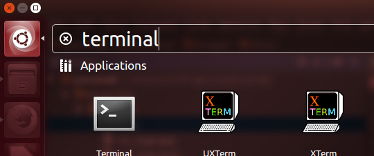
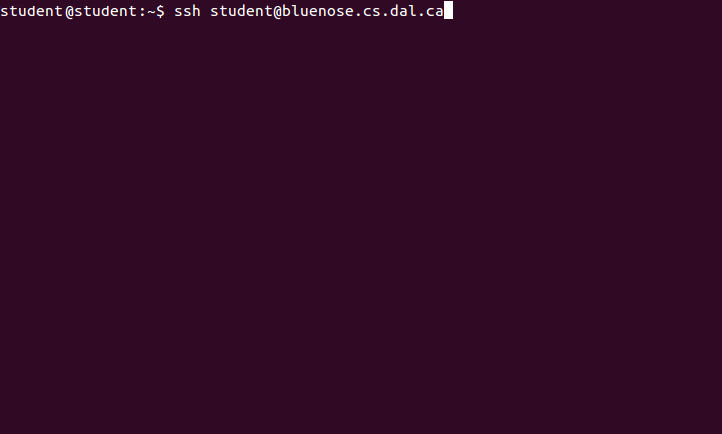
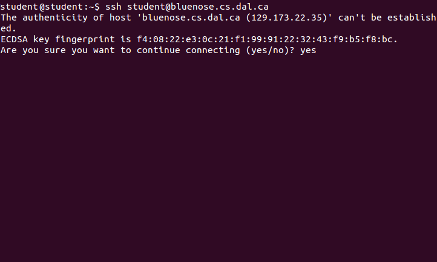
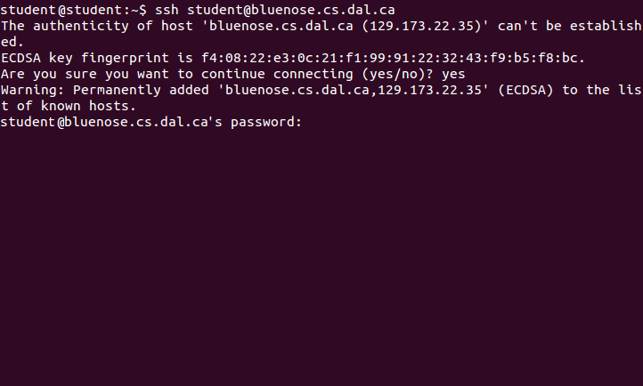
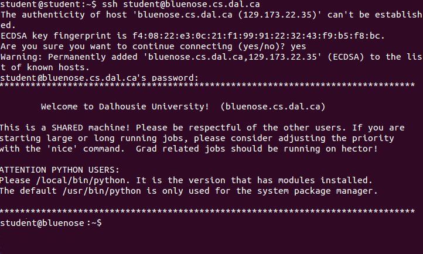

Linux (Ubuntu)
These instructions are for Ubuntu, but should be similar for other Linux distros.
Shell Access
- Search for the terminal, and open it.
- Type "ssh <csname>@bluenose.cs.dal.ca" and press enter, where <csname> is the username you use on Moodle
- Accept the key fingerprint
- Type your password used on mooodle and press enter (no characters will appear while you are typing)
- You can now issue shell commands to bluenose